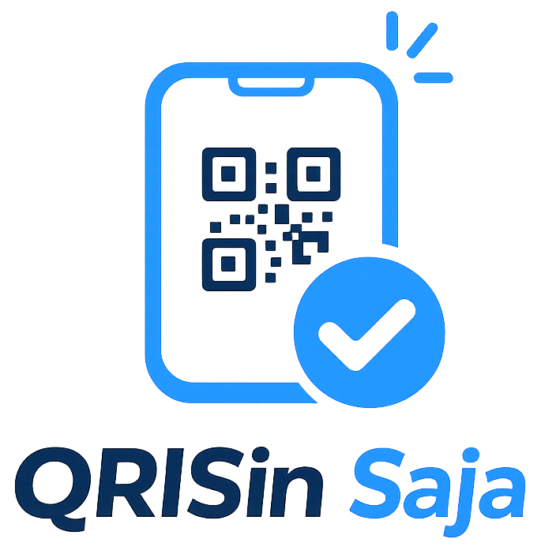
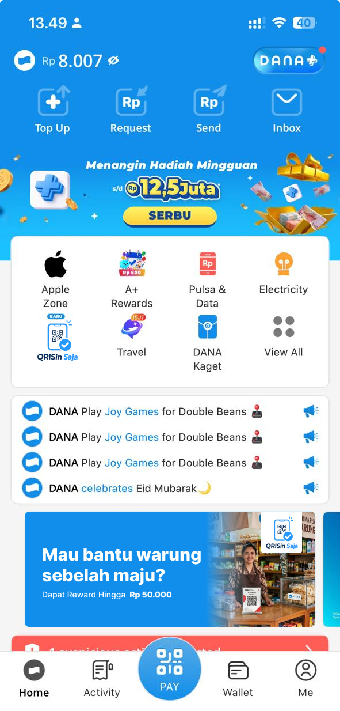
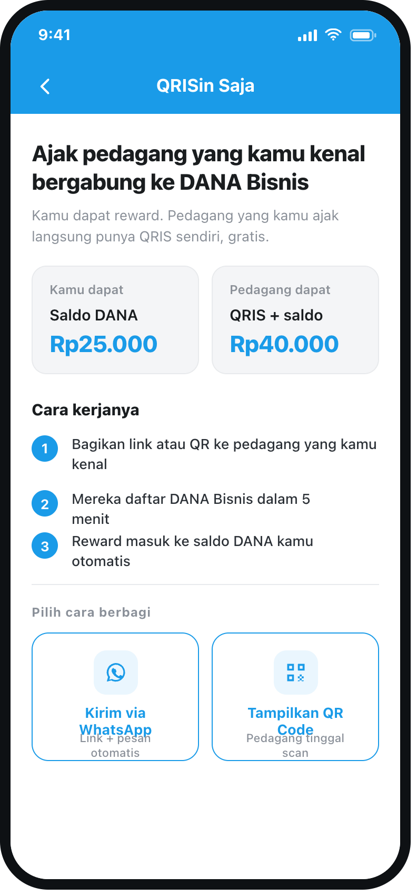
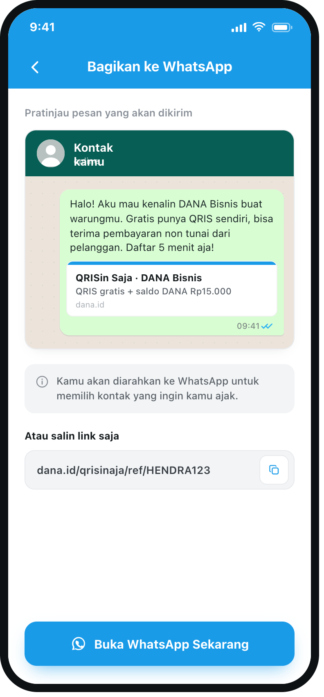
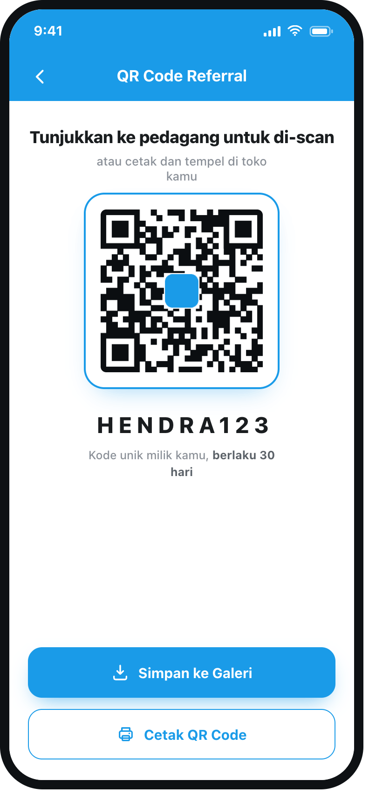
| Tahap | Kondisi | Rina · DANA User | Pak Budi · Merchant | Bu Sari · Referred |
|---|---|---|---|---|
| Tahap 1 | Selesai daftar & KYC | Rp5.000 voucher | Rp10.000 saldo | Rp15.000 saldo |
| Tahap 2 | ≥3 transaksi dari pelanggan unik | Rp20.000 saldo | Rp40.000 saldo | Rp25.000 saldo |
| Total | Rp25.000 | Rp50.000 | Rp40.000 |
| Worst case | Mekanisme pencegahan |
|---|---|
| Spam referral | 1 nomor HP hanya bisa didaftarkan 1 kali |
| Transaksi palsu | Syarat 3 transaksi dari pelanggan unik yang berbeda |
| Merchant fiktif | Ter-filter natural — tidak akan pernah mencapai Tahap 2 |
| Reward abuse | KYC wajib · 1 NIK = 1 merchant |
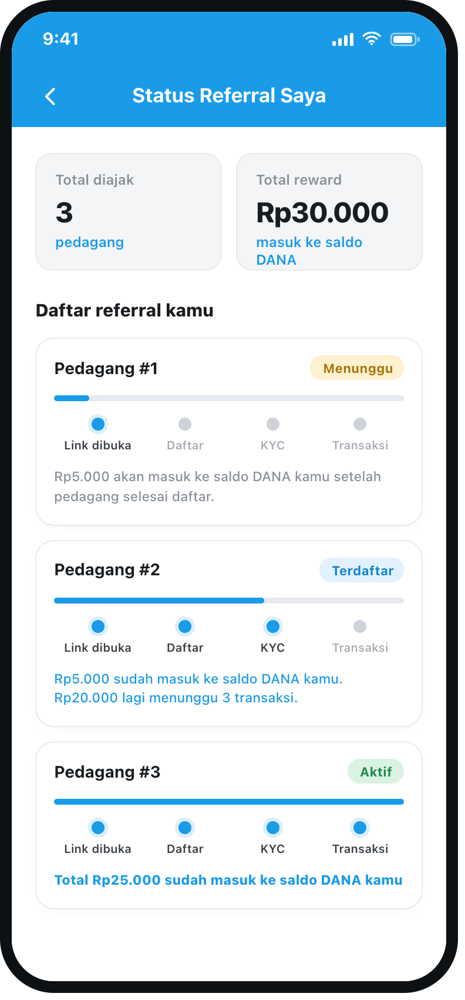
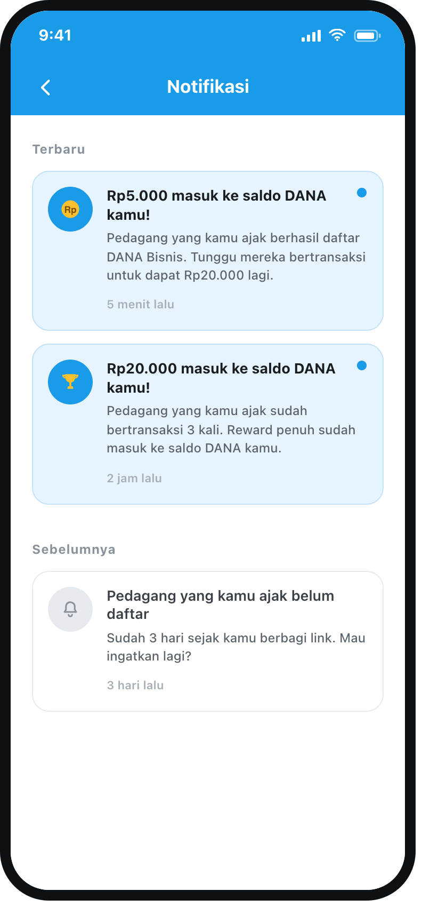
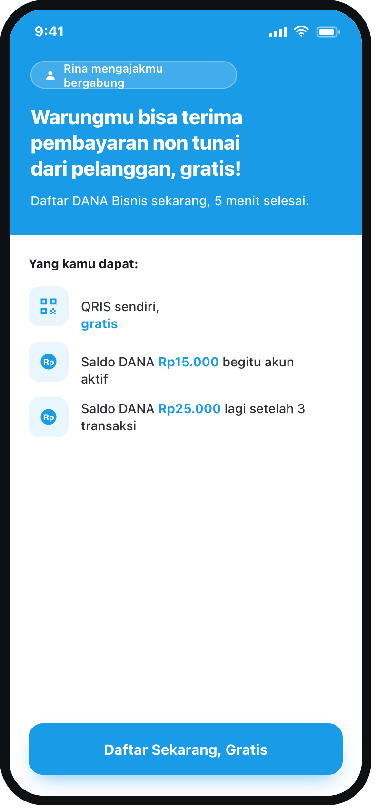
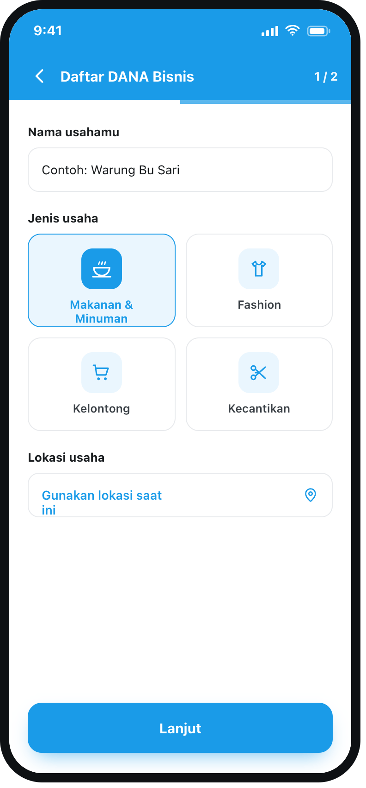
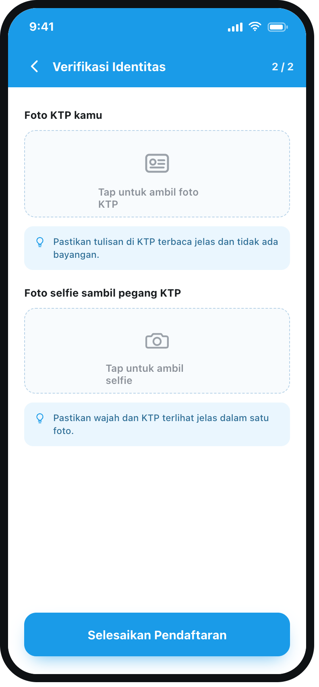
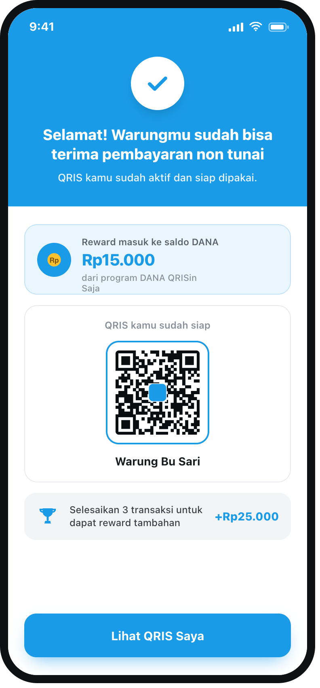
| Risiko | Indikator | Threshold / aksi |
|---|---|---|
| Rasio deteksi fraud | Transaksi mencurigakan | Threshold ditetapkan tim bisnis |
| Spam referral | >5 referral dalam 24 jam | Flag untuk review |
| Merchant fiktif | Tidak ada transaksi dalam 14 hari | Auto-expire |
| Drop-off onboarding | Berhenti di tengah pendaftaran | Reminder notifikasi 24 jam |